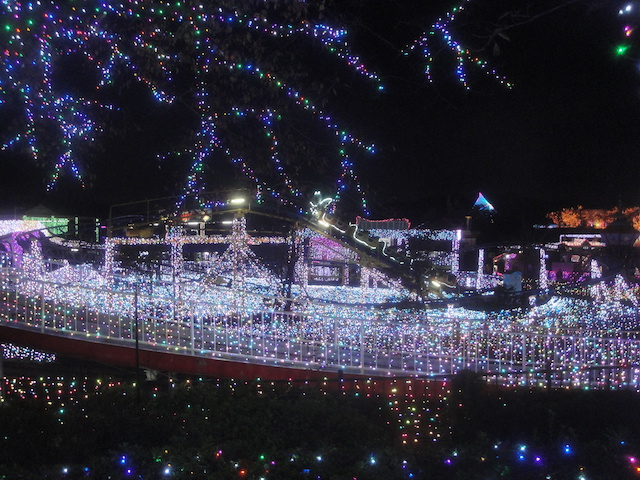
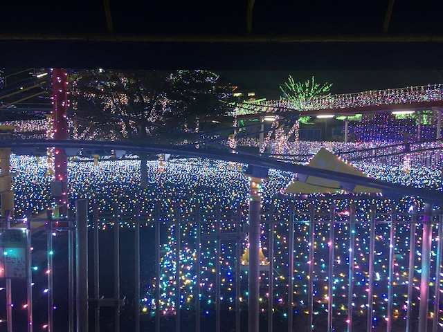
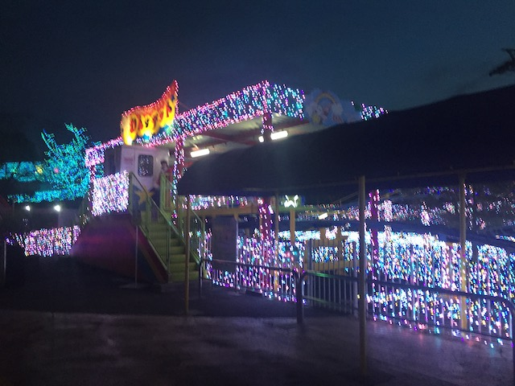
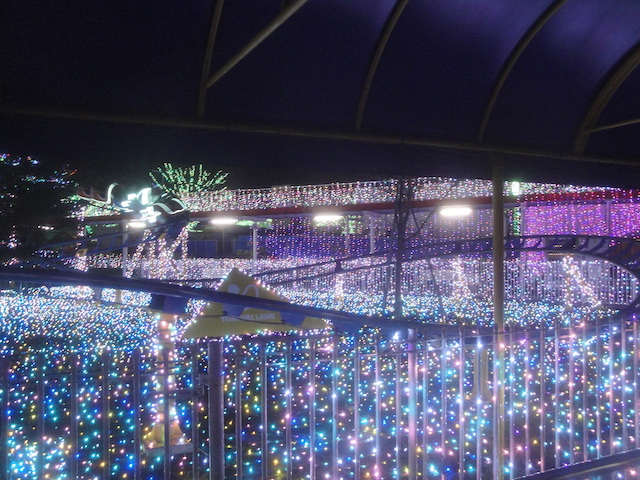
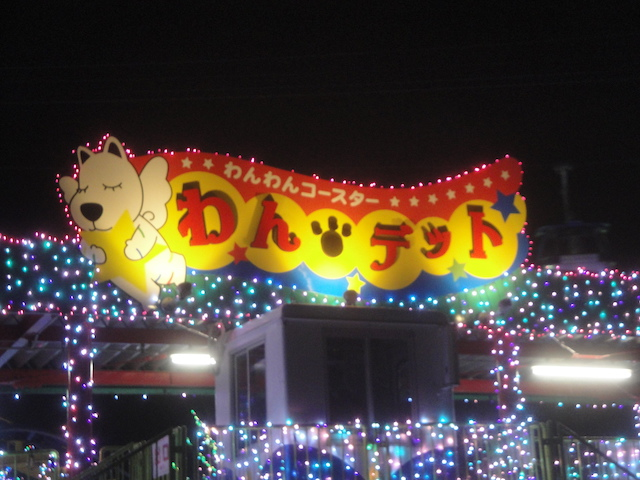

| |
.
Wan Wan Coaster Wandit Review

We're here at Yomiuriland. For their kiddy coaster, they have Wan Wan Coaster Wandit. An....all right kiddy coaster. I mean, it's a kiddy coaster. It's meant for little kids. But judging as a credit whore, it's pretty meh. Different from most other kiddy coasters, but the way it rides, it pretty much feels the same. Mainly, it has roomy cars. Which is nice. Glad to not have my legs cramped while credit whoring. Get in the cars, pull down the lap bars, and we're off. Roll around a turn, and go up the tiny lifthill. Try and not look the confused parents in the eyes. Oh look, we're already at the top. We roll down a small curved first drop. It's not thrilling or anything like that. I mean, it's a kiddy coaster. Go around another sort of small turn around. Go down a small little drop, before heading over another hill. Go around another turn, and we're back in the station. Go around another few laps cause...this is a kiddy coaster. *Sigh* Cha-Ching. At least we got another credit. And the Christmas Lights did make this ride a lot better.
3/10
Location: Yomiuriland
Opened: 2005
Built by: Hoei Sangyo
Last Ridden: November 8, 2018
Wan Wan Coaster Wandit Photos




Home
|